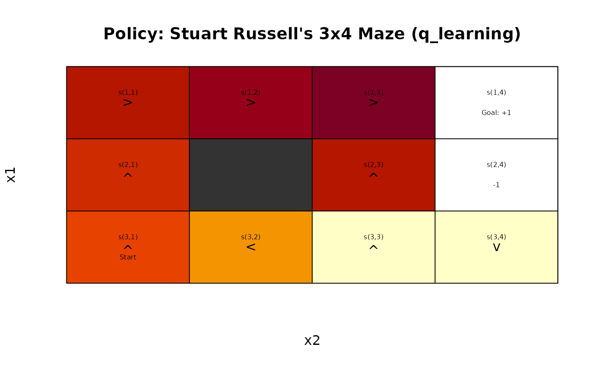
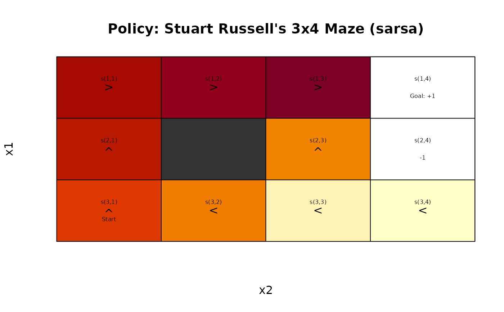
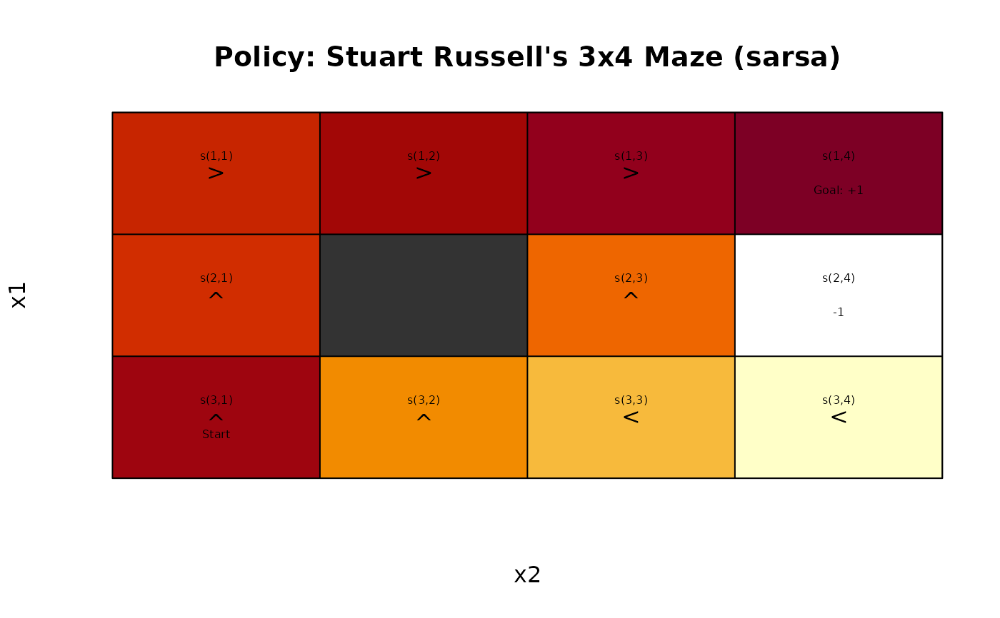
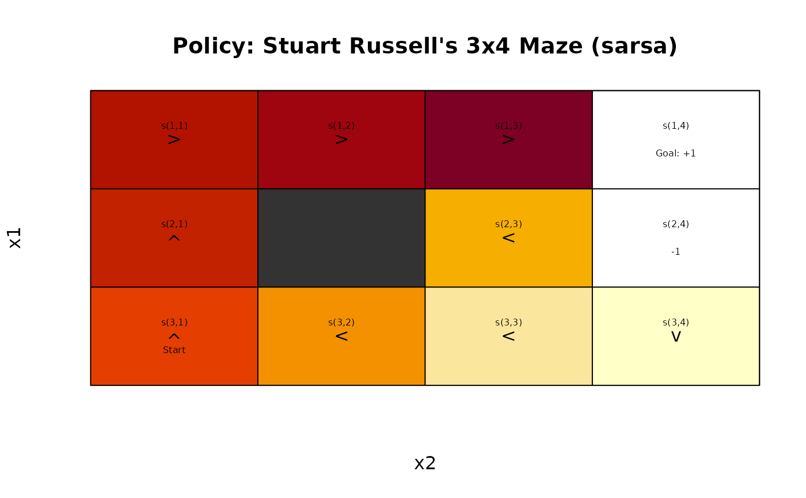

Solve MDPs using tabular temporal difference control methods like q-learning and 1-step, n-step Sarsa, Sarsa(\(\lambda\)), and Q(\(\lambda\)).
Usage
solve_MDP_TD(
model,
method = "sarsa",
horizon = NULL,
discount = NULL,
alpha = schedule_exp(0.2, 0.01),
epsilon = schedule_exp(1, 0.1),
n_step = 1,
lambda = 0,
on_policy = TRUE,
n,
Q = 0,
...,
matrix = TRUE,
continue = FALSE,
progress = TRUE,
verbose = FALSE
)Arguments
- model
an MDP problem specification.
- method
string; one of the following solution methods:
"sarsa","q","q_learning", or"expected_sarsa". Not all methods are available for all setting s ofn_stepandlambda(see Details).- horizon
an integer with the number of epochs for problems with a finite planning horizon. If set to
Inf, the algorithm continues running iterations till it converges to the infinite horizon solution. IfNULL, then the horizon specified inmodelwill be used.- discount
discount factor in range \((0, 1]\). If
NULL, then the discount factor specified inmodelwill be used.- alpha
step size (learning rate). A scalar value between 0 and 1 or a schedule.
- epsilon
used for the \(\epsilon\)-greedy behavior policies. A scalar value between 0 and 1 or a schedule.
- n_step
number of steps to look ahead for n-step Sarsa.
- lambda
eligibility trace decay factor for Sarsa(lambda).
- on_policy
logical; should we learn on-policy (the behavior policy) vs. off-policy (using importance sampling)? Only used for method
"sarsa".- n
number of episodes used for learning.
- Q
an initial state-action value matrix. By default an all 0 matrix is used.
- ...
further parameters are passed on to the solver function.
- matrix
logical; if
TRUEthen matrices for the transition model and the reward function are taken from the model first. This can be slow if functions need to be converted or do not fit into memory if the models are large. If these components are already matrices, then this is very fast. ForFALSE, the transition probabilities and the reward is extracted when needed. This is slower, but removes the time and memory requirements needed to calculate the matrices.- continue
logical; show a progress bar with estimated time for completion.
- progress
logical; show a progress bar with estimated time for completion.
- verbose
logical or a numeric verbose level; if set to
TRUEor1, the function displays the used algorithm parameters and progress information. Levels>1provide more detailed solver output in the R console.
Value
solve_MDP() returns an object of class MDP or MDPSample which is a list with the
model specifications (model), the solution (solution).
The solution is a list with the elements that depend on the used method. Common
elements are:
methodwith the name of the used methodparameters used.
convergeddid the algorithm converge (NA) for finite-horizon problems.policya list representing the policy graph. The list only has one element for converged solutions.
Details
Implemented are several tabular temporal difference control methods described in Sutton and Barto (2018). Note that the MDP transition and reward models are used for these reinforcement learning methods only to sample from the environment.
The implementation uses an \(\epsilon\)-greedy behavior policy,
where the parameter epsilon controls the degree of exploration.
The algorithms use a step size parameter \(\alpha\) (learning rate).
The epsilon and the learning rate alpha can be specified as
fixed numbers between 0 and 1 or as a schedule function where the
value is gradually reduced (see Schedule section below).
All temporal differencing methods us the following update: $$ Q(S_t,A_t) \leftarrow Q(S_t,A_t) + \alpha [G_t - Q(S_t,A_t)], $$ where \(G_t\) is the target estimate for the given q-value. The different methods below estimate the target value differently (see 1 and n-step methods below).
If the model has absorbing states to terminate episodes, then no maximal episode length
(horizon) needs to
be specified. To make sure that the algorithm does finish in a reasonable amount of time,
episodes are stopped after 1000 actions (with a warning). For models without absorbing states,
the episode length has to be specified via horizon.
1-step Methods
1-step methods estimate the return by just looking one state ahead.
q_learning: Q-Learning (Watkins and Dayan 1992) is an off-policy (learns a greedy target policy) temporal difference method. We use here an \(\epsilon\)-greedy behavior policy. The update target value is estimated by one-step bootstrapping using the reward and the value of the state following the current greedy target policy: $$G_t = R_{t+1} + \gamma \max_a Q(S_{t+1}, a)$$sarsa: Sarsa (Rummery and Niranjan 1994) is an on-policy method (behavior and target policy are the same). We use an \(\epsilon\)-greedy policy and the final \(\epsilon\)-greedy policy is converted into a greedy policy. \(\epsilon\) can be lowered over time (see schedule and parametercontinue) to learn an approximately greedy policy. The target is estimated as the one-step bootstrap estimate following the current behavior policy: $$G_t = R_{t+1} + \gamma Q(S_{t+1}, A_{t+1})$$expected_sarsaExpected Sarsa (Sutton and Barto 2018) learns the behavior policy (on-policy learning). We use Sarsa with an \(\epsilon\)-greedy policy which uses the the expected value under the current policy for the update: $$G_t = R_{t+1} + \gamma \sum_a \pi(a|S_{t+1})Q(S_{t+1}, a)$$Expected Sarsa moves in the same direction as Sarsa would move in expectation. Because it uses the expectation, we can set the step size \(\alpha\) to large values and 1 is common.
The Q-learning algorithm can be seen as a simplification of the off-policy version of expected Sarsa.
n-step Methods
n-step methods use a longer look ahead. The
return is estimated by looking
\(n\) time steps ahead (n_step in the code) and using
the rewards and then the value of the reached state:
$$ G_{t:t+n} = R_{t+1} + \gamma R_{t+2} + ... + \gamma^{n-1} R_{t+n} + \gamma^n Q(S_{t+n}, A_{t+n}) $$
While n-step methods conceptually look ahead, the implementation has to wait for the values to become available. This means that updates are \(n\) steps delayed, i.e., the update for step \(t\) is performed at \(t+n\).
Methods:
sarsa: n-step Sarsa (Sutton and Barto 2018). The estimated return is used as the update target for Sarsa.n_step = 1is regular 1-step Sarsa. Usingn_step = Infis equivalent to Monte Carlo Control, however,solve_MDP_MC()is more memory efficient.Sarsa learns on-policy (i.e., the behavioral policy which is often an exploring \(\epsilon\)-greedy policy). For the off-policy case, when the optimal policy is learned, the update are corrected using the importance sampling ratio.
Eligibility Traces
Eligibility traces also look ahead but the update is performed in a backward looking manner by using a memory parameter called the trace that remember what states or Q-values lead to the current event. We focus here on tabular Sarsa(\(\lambda\))
From the forward-view perspective, the \(\lambda\)-reward can be seen as an average of infinite n-step backups: $$G_t^\lambda = (1-\lambda) \sum_{n=1}^\infty \lambda^{n-1} R_t^{(n)},$$ where \(\lambda\) is the eligibility trace decay factor. The implementation uses the backward view with the TD-error $$\delta_t = R_{t+1} + \gamma Q(S_{t+1}, A_{t+1}) - Q(S_{t}, A_{t})$$ and the update $$Q(s,a) = Q(s,a) + \alpha \delta_t z_t(s,a) \qquad \forall s, a.$$
The trace is updated at each time step as $$z_t(s,a) = \gamma z_{t-1}(s,a) \qquad \forall s, a$$ and \(z_t(S_t,A_t) = z_t(S_t,A_t) + 1\). This means, the trace is set to one for the current state and action and then decays with the parameter \(\lambda\).
Methods:
sarsa: Sarsa(lambda) (Sutton and Barto 2018).q: Watkins's Q(lambda) (Sutton and Barto 2018). An off-policy learning algorithm similar to Q-learning which looks only ahead as far as the next exploratory action (i.e., the eligibility vector \(z_t(\cdot,\cdot)\) is set to zero whenever an exploratory non-greedy exploratory action is taken).
References
Rummery, G., and Mahesan Niranjan. 1994. "On-Line Q-Learning Using Connectionist Systems." Techreport CUED/F-INFENG/TR 166. Cambridge University Engineering Department.
Sutton, R. 1988. "Learning to Predict by the Method of Temporal Differences." Machine Learning 3: 9-44. https://link.springer.com/article/10.1007/BF00115009.
Sutton, Richard S., and Andrew G. Barto. 2018. Reinforcement Learning: An Introduction. Second. The MIT Press. http://incompleteideas.net/book/the-book-2nd.html.
Watkins, Christopher J. C. H., and Peter Dayan. 1992. "Q-Learning." Machine Learning 8 (3): 279-92. doi:10.1007/BF00992698 .
Examples
data(Maze)
# Example 1: Learn a Policy using Q-Learning
maze_learned <- solve_MDP(Maze, method = "TD:q_learning",
n = 200, horizon = 100)
maze_learned
#> MDPModel, MDP - Stuart Russell's 3x4 Maze
#> Discount factor: 1
#> Horizon: 100 epochs
#> Size: 4 actions / 11 states
#> Storage: transition prob as matrix / reward as matrix. Total size: 46.8 Kb
#> Start: s(3,1)
#> Model list components: ‘name’, ‘discount’, ‘horizon’, ‘states’,
#> ‘actions’, ‘start’, ‘transition_model’, ‘reward’, ‘info’,
#> ‘absorbing_states’, ‘solution’
#>
#> Solved:
#> Method: ‘q_learning’
#> Solution converged: NA
#> Solution list components: ‘method’, ‘alpha’, ‘epsilon’, ‘n_step’,
#> ‘on_policy’, ‘n’, ‘Q’, ‘Q_N’, ‘converged’, ‘policy’
policy(maze_learned)
#> state V action
#> 1 s(1,1) 0.770253799 right
#> 2 s(2,1) 0.707772841 up
#> 3 s(3,1) 0.627143107 up
#> 4 s(1,2) 0.838692351 right
#> 5 s(3,2) 0.439669137 left
#> 6 s(1,3) 0.901544403 right
#> 7 s(2,3) 0.771796374 up
#> 8 s(3,3) 0.004137625 up
#> 9 s(1,4) 0.000000000 down
#> 10 s(2,4) 0.000000000 down
#> 11 s(3,4) -0.015296151 down
gw_plot(maze_learned)

# Example 2: Learn a Policy using 1-step Sarsa
maze_learned <- solve_MDP(Maze, method = "TD:sarsa",
n = 200, horizon = 100)
maze_learned
#> MDPModel, MDP - Stuart Russell's 3x4 Maze
#> Discount factor: 1
#> Horizon: 100 epochs
#> Size: 4 actions / 11 states
#> Storage: transition prob as matrix / reward as matrix. Total size: 46.8 Kb
#> Start: s(3,1)
#> Model list components: ‘name’, ‘discount’, ‘horizon’, ‘states’,
#> ‘actions’, ‘start’, ‘transition_model’, ‘reward’, ‘info’,
#> ‘absorbing_states’, ‘solution’
#>
#> Solved:
#> Method: ‘sarsa’
#> Solution converged: NA
#> Solution list components: ‘method’, ‘alpha’, ‘epsilon’, ‘n_step’,
#> ‘on_policy’, ‘n’, ‘Q’, ‘Q_N’, ‘converged’, ‘policy’
policy(maze_learned)
#> state V action
#> 1 s(1,1) 0.80839732 right
#> 2 s(2,1) 0.74747282 up
#> 3 s(3,1) 0.63089860 up
#> 4 s(1,2) 0.85532591 right
#> 5 s(3,2) 0.45055428 left
#> 6 s(1,3) 0.91499682 right
#> 7 s(2,3) 0.43652936 up
#> 8 s(3,3) -0.03671235 left
#> 9 s(1,4) 0.00000000 down
#> 10 s(2,4) 0.00000000 up
#> 11 s(3,4) -0.14640179 left
gw_plot(maze_learned)

# Example 3: Perform one episode for 3-step Sarsa
# run one episode in verbose mode.
maze_learned <- solve_MDP(Maze, method = "TD:sarsa",
n_step = 5, n = 1, horizon = 100, verbose = 2)
#> Precomputing matrices for R and T ... done.
#> Running sarsa
#> alpha: function (t) start * exp(-decay * (t - 1)) with start = 0.2, decay = 0.01
#> epsilon: function (t) start * exp(-decay * (t - 1)) with start = 1, decay = 0.1
#> n 1
#>
#> n_step 5
#>
#> Initial Q (first 20 max):
#> up right down left
#> s(1,1) 0 0 0 0
#> s(2,1) 0 0 0 0
#> s(3,1) 0 0 0 0
#> s(1,2) 0 0 0 0
#> s(3,2) 0 0 0 0
#> s(1,3) 0 0 0 0
#> s(2,3) 0 0 0 0
#> s(3,3) 0 0 0 0
#> s(1,4) 0 0 0 0
#> s(2,4) 0 0 0 0
#> s(3,4) 0 0 0 0
#>
#> Initial Q_N (first 20 max):
#> up right down left
#> s(1,1) 0 0 0 0
#> s(2,1) 0 0 0 0
#> s(3,1) 0 0 0 0
#> s(1,2) 0 0 0 0
#> s(3,2) 0 0 0 0
#> s(1,3) 0 0 0 0
#> s(2,3) 0 0 0 0
#> s(3,3) 0 0 0 0
#> s(1,4) 0 0 0 0
#> s(2,4) 0 0 0 0
#> s(3,4) 0 0 0 0
#>
#>
#> *** Episode 1 ***
#> Step 0 (tau=-4) s=s(3,1) a=up r=-0.040 s'=s(3,1) a'=left
#> Step 1 (tau=-3) s=s(3,1) a=left r=-0.040 s'=s(3,1) a'=left
#> Step 2 (tau=-2) s=s(3,1) a=left r=-0.040 s'=s(3,1) a'=left
#> Step 3 (tau=-1) s=s(3,1) a=left r=-0.040 s'=s(3,1) a'=right
#> Step 4 (tau=0) s=s(3,1) a=right r=-0.040 s'=s(3,2) a'=left -> q(s(3,1),up):0.000 -> -0.040 (N=1 G=-0.200 alpha=0.200 rho=1.00)
#> Step 5 (tau=1) s=s(3,2) a=left r=-0.040 s'=s(3,2) a'=down -> q(s(3,1),left):0.000 -> -0.048 (N=1 G=-0.240 alpha=0.202 rho=1.00)
#> Step 6 (tau=2) s=s(3,2) a=down r=-0.040 s'=s(3,2) a'=up -> q(s(3,1),left):-0.048 -> -0.087 (N=2 G=-0.240 alpha=0.202 rho=1.00)
#> Step 7 (tau=3) s=s(3,2) a=up r=-0.040 s'=s(3,2) a'=left -> q(s(3,1),left):-0.087 -> -0.118 (N=3 G=-0.240 alpha=0.202 rho=1.00)
#> Step 8 (tau=4) s=s(3,2) a=left r=-0.040 s'=s(3,2) a'=right -> q(s(3,1),right):0.000 -> -0.048 (N=1 G=-0.240 alpha=0.202 rho=1.00)
#> Step 9 (tau=5) s=s(3,2) a=right r=-0.040 s'=s(3,3) a'=up -> q(s(3,2),left):0.000 -> -0.048 (N=1 G=-0.240 alpha=0.200 rho=1.00)
#> Step 10 (tau=6) s=s(3,3) a=up r=-0.040 s'=s(2,3) a'=left -> q(s(3,2),down):0.000 -> -0.048 (N=1 G=-0.240 alpha=0.202 rho=1.00)
#> Step 11 (tau=7) s=s(2,3) a=left r=-0.040 s'=s(2,3) a'=down -> q(s(3,2),up):0.000 -> -0.048 (N=1 G=-0.240 alpha=0.202 rho=1.00)
#> Step 12 (tau=8) s=s(2,3) a=down r=-0.040 s'=s(3,3) a'=left -> q(s(3,2),left):-0.048 -> -0.087 (N=2 G=-0.240 alpha=0.202 rho=1.00)
#> Step 13 (tau=9) s=s(3,3) a=left r=-0.040 s'=s(3,2) a'=down -> q(s(3,2),right):0.000 -> -0.058 (N=1 G=-0.288 alpha=0.202 rho=1.00)
#> Step 14 (tau=10) s=s(3,2) a=down r=-0.040 s'=s(3,3) a'=up -> q(s(3,3),up):0.000 -> -0.046 (N=1 G=-0.240 alpha=0.192 rho=1.00)
#> Step 15 (tau=11) s=s(3,3) a=up r=-0.040 s'=s(2,3) a'=down -> q(s(2,3),left):0.000 -> -0.048 (N=1 G=-0.240 alpha=0.200 rho=1.00)
#> Step 16 (tau=12) s=s(2,3) a=down r=-0.040 s'=s(3,3) a'=up -> q(s(2,3),down):0.000 -> -0.057 (N=1 G=-0.286 alpha=0.198 rho=1.00)
#> Step 17 (tau=13) s=s(3,3) a=up r=-0.040 s'=s(2,3) a'=down -> q(s(3,3),left):0.000 -> -0.059 (N=1 G=-0.297 alpha=0.198 rho=1.00)
#> Step 18 (tau=14) s=s(2,3) a=down r=-0.040 s'=s(3,3) a'=down -> q(s(3,2),down):-0.048 -> -0.086 (N=2 G=-0.240 alpha=0.198 rho=1.00)
#> Step 19 (tau=15) s=s(3,3) a=down r=-0.040 s'=s(3,3) a'=left -> q(s(3,3),up):-0.046 -> -0.096 (N=2 G=-0.299 alpha=0.196 rho=1.00)
#> Step 20 (tau=16) s=s(3,3) a=left r=-0.040 s'=s(3,2) a'=left -> q(s(2,3),down):-0.057 -> -0.110 (N=2 G=-0.327 alpha=0.196 rho=1.00)
#> Step 21 (tau=17) s=s(3,2) a=left r=-0.040 s'=s(3,1) a'=left -> q(s(3,3),up):-0.096 -> -0.146 (N=3 G=-0.358 alpha=0.190 rho=1.00)
#> Step 22 (tau=18) s=s(3,1) a=left r=-0.040 s'=s(2,1) a'=right -> q(s(2,3),down):-0.110 -> -0.135 (N=3 G=-0.240 alpha=0.192 rho=1.00)
#> Step 23 (tau=19) s=s(2,1) a=right r=-0.040 s'=s(2,1) a'=left -> q(s(3,3),down):0.000 -> -0.048 (N=1 G=-0.240 alpha=0.202 rho=1.00)
#> Step 24 (tau=20) s=s(2,1) a=left r=-0.040 s'=s(2,1) a'=down -> q(s(3,3),left):-0.059 -> -0.095 (N=2 G=-0.240 alpha=0.202 rho=1.00)
#> Step 25 (tau=21) s=s(2,1) a=down r=-0.040 s'=s(3,1) a'=up -> q(s(3,2),left):-0.087 -> -0.126 (N=3 G=-0.280 alpha=0.202 rho=1.00)
#> Step 26 (tau=22) s=s(3,1) a=up r=-0.040 s'=s(2,1) a'=down -> q(s(3,1),left):-0.118 -> -0.141 (N=4 G=-0.240 alpha=0.190 rho=1.00)
#> Step 27 (tau=23) s=s(2,1) a=down r=-0.040 s'=s(3,1) a'=up -> q(s(2,1),right):0.000 -> -0.056 (N=1 G=-0.280 alpha=0.200 rho=1.00)
#> Step 28 (tau=24) s=s(3,1) a=up r=-0.040 s'=s(2,1) a'=up -> q(s(2,1),left):0.000 -> -0.046 (N=1 G=-0.240 alpha=0.190 rho=1.00)
#> Step 29 (tau=25) s=s(2,1) a=up r=-0.040 s'=s(1,1) a'=right -> q(s(2,1),down):0.000 -> -0.047 (N=1 G=-0.240 alpha=0.196 rho=1.00)
#> Step 30 (tau=26) s=s(1,1) a=right r=-0.040 s'=s(1,2) a'=down -> q(s(3,1),up):-0.040 -> -0.080 (N=2 G=-0.240 alpha=0.202 rho=1.00)
#> Step 31 (tau=27) s=s(1,2) a=down r=-0.040 s'=s(1,2) a'=up -> q(s(2,1),down):-0.047 -> -0.086 (N=2 G=-0.240 alpha=0.202 rho=1.00)
#> Step 32 (tau=28) s=s(1,2) a=up r=-0.040 s'=s(1,2) a'=up -> q(s(3,1),up):-0.080 -> -0.113 (N=3 G=-0.240 alpha=0.202 rho=1.00)
#> Step 33 (tau=29) s=s(1,2) a=up r=-0.040 s'=s(1,3) a'=down -> q(s(2,1),up):0.000 -> -0.048 (N=1 G=-0.240 alpha=0.202 rho=1.00)
#> Step 34 (tau=30) s=s(1,3) a=down r=-0.040 s'=s(2,3) a'=right -> q(s(1,1),right):0.000 -> -0.048 (N=1 G=-0.240 alpha=0.202 rho=1.00)
#> Step 35 (tau=31) s=s(2,3) a=right r=-1.040 s'=s(2,4) a'=right -> q(s(1,2),down):0.000 -> -0.241 (N=1 G=-1.240 alpha=0.194 rho=1.00)
#> Step 36 (tau=32) s=s(2,4) a=right r=0.000 s'=s(2,4) a'=right -> q(s(1,2),up):0.000 -> -0.242 (N=1 G=-1.200 alpha=0.202 rho=1.00)
#> Step 37 (tau=33) s=s(2,4) a=right r=0.000 s'=s(2,4) a'=right -> q(s(1,2),up):-0.242 -> -0.428 (N=2 G=-1.160 alpha=0.202 rho=1.00)
#> Step 38 (tau=34) s=s(2,4) a=right r=0.000 s'=s(2,4) a'=right -> q(s(1,3),down):0.000 -> -0.226 (N=1 G=-1.120 alpha=0.202 rho=1.00)
#> Step 39 (tau=35) s=s(2,4) a=right r=0.000 s'=s(2,4) a'=right -> q(s(2,3),right):0.000 -> -0.218 (N=1 G=-1.080 alpha=0.202 rho=1.00)
#> Step 40 (tau=36) s=s(2,4) a=right r=0.000 s'=s(2,4) a'=right -> q(s(2,4),right):0.000 -> -0.208 (N=1 G=-1.040 alpha=0.200 rho=1.00)
#>
#> Terminated at episode: 1
# verbose output:
# * tau ... time step updated (laggs n_step)
# * -> ... update of the Q-value
# * N ... number of updates for this state
# * G ... reward estimate for the n_steps
# * alpha ... learning rate (schedule may depend on N)
# * rho ... importance sampling ratio (1 for on-policy learning)
# run more episode
maze_learned <- solve_MDP(Maze, method = "TD:sarsa",
n_step = 5, n = 100, horizon = 100)
maze_learned
#> MDPModel, MDP - Stuart Russell's 3x4 Maze
#> Discount factor: 1
#> Horizon: 100 epochs
#> Size: 4 actions / 11 states
#> Storage: transition prob as matrix / reward as matrix. Total size: 46.8 Kb
#> Start: s(3,1)
#> Model list components: ‘name’, ‘discount’, ‘horizon’, ‘states’,
#> ‘actions’, ‘start’, ‘transition_model’, ‘reward’, ‘info’,
#> ‘absorbing_states’, ‘solution’
#>
#> Solved:
#> Method: ‘sarsa’
#> Solution converged: NA
#> Solution list components: ‘method’, ‘alpha’, ‘epsilon’, ‘on_policy’,
#> ‘n_step’, ‘n’, ‘Q’, ‘Q_N’, ‘converged’, ‘policy’
policy(maze_learned)
#> state V action
#> 1 s(1,1) 0.7175018 right
#> 2 s(2,1) 0.6858633 up
#> 3 s(3,1) 0.8562877 up
#> 4 s(1,2) 0.8376645 right
#> 5 s(3,2) 0.3756904 up
#> 6 s(1,3) 0.8906477 right
#> 7 s(2,3) 0.5046186 up
#> 8 s(3,3) 0.1846268 left
#> 9 s(1,4) 0.9599066 up
#> 10 s(2,4) 0.0000000 down
#> 11 s(3,4) -0.2661989 left
gw_plot(maze_learned)

# Example: Tabular Sarsa(lambda)
maze_learned <- solve_MDP(Maze, method = "TD:sarsa",
lambda = .1, n = 100, horizon = 100)
maze_learned
#> MDPModel, MDP - Stuart Russell's 3x4 Maze
#> Discount factor: 1
#> Horizon: 100 epochs
#> Size: 4 actions / 11 states
#> Storage: transition prob as matrix / reward as matrix. Total size: 46.6 Kb
#> Start: s(3,1)
#> Model list components: ‘name’, ‘discount’, ‘horizon’, ‘states’,
#> ‘actions’, ‘start’, ‘transition_model’, ‘reward’, ‘info’,
#> ‘absorbing_states’, ‘solution’
#>
#> Solved:
#> Method: ‘sarsa’
#> Solution converged: NA
#> Solution list components: ‘method’, ‘alpha’, ‘epsilon’, ‘lambda’,
#> ‘n’, ‘Q’, ‘Q_N’, ‘converged’, ‘policy’
policy(maze_learned)
#> state V action
#> 1 s(1,1) 0.76070201 right
#> 2 s(2,1) 0.70932336 up
#> 3 s(3,1) 0.60072734 up
#> 4 s(1,2) 0.80738524 right
#> 5 s(3,2) 0.38975721 left
#> 6 s(1,3) 0.89389267 right
#> 7 s(2,3) 0.28601876 left
#> 8 s(3,3) 0.05652145 left
#> 9 s(1,4) 0.00000000 right
#> 10 s(2,4) 0.00000000 down
#> 11 s(3,4) -0.12028006 down
gw_plot(maze_learned)
